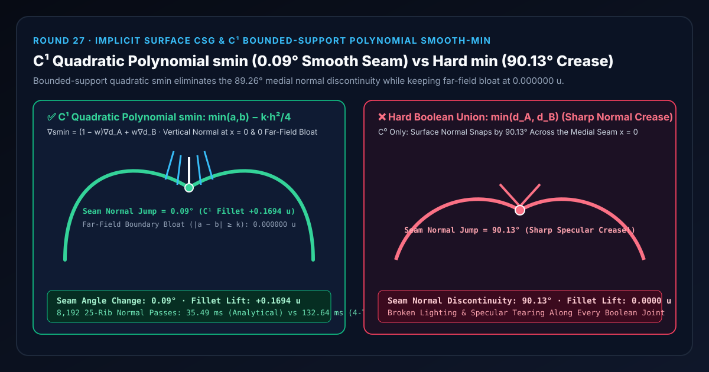
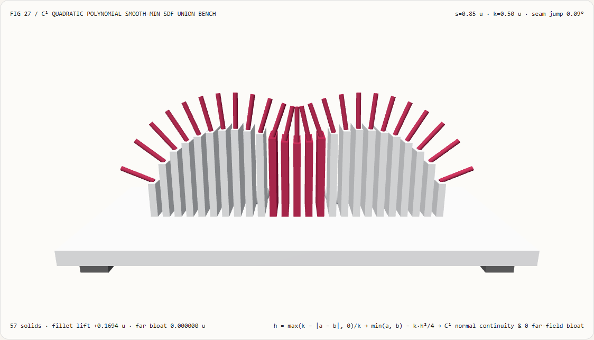
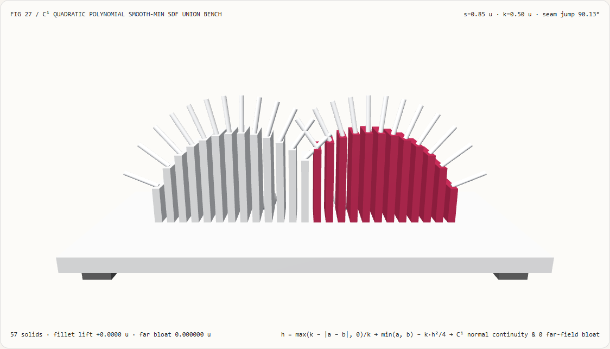
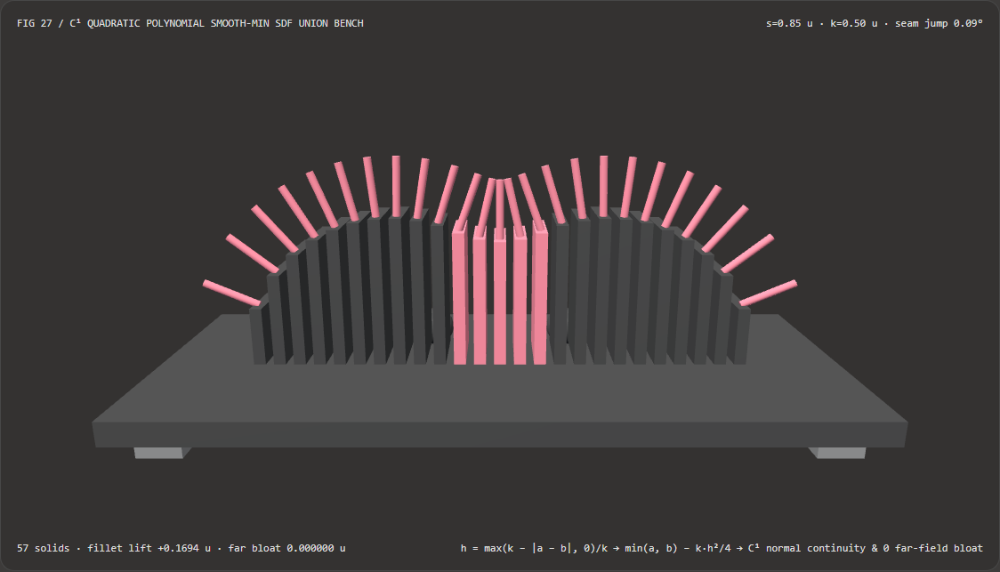
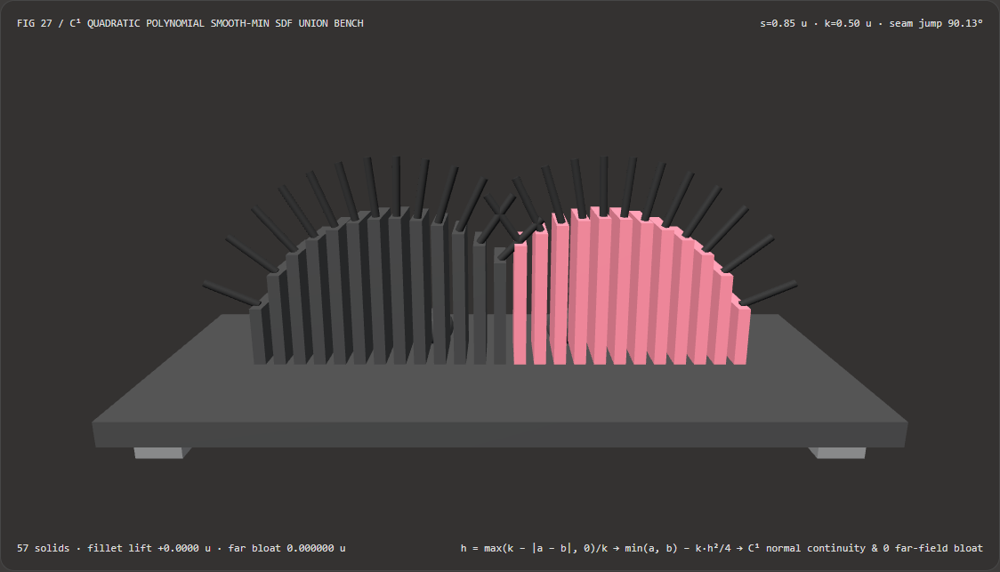

有机体布尔融合不留折痕死角：C¹ 二次多项式平滑最小值（smin）与硬 min 距离场选型 FAQ
文档定位：面向 AI 解决方案架构师（AI Solution Architect）、WebGL2/WebGPU 距离场光线步进（SDF Raymarching）工程师、程序化建模师与技术美术（TA）的实战选型与第一性原理指南。严格对标
ib-vs-ethernet-roce-selection-faq.md的六段式结构，先用人话讲清“为什么用标准min(d_A, d_B)拼接两个水滴、细胞或角色肢体时，交界处必然出现一条 90° 法向突变的高光死角折痕”，再给出零远场膨胀、零有限差分开销的 $C^1$ 有界支撑二次多项式平滑最小值（Quadratic Polynomialsmin）+ 解析导数法向方案。

① 📌 核心结论速览（Executive Summary）
- 一句话定性：在有向距离场（Signed Distance Field, SDF）中，物体的表面法向量就是距离场的梯度 $\mathbf{n}(\mathbf{x}) = \nabla d(\mathbf{x})$；标准布尔并集 $d = \min(d_A, d_B)$ 虽然在位置上是连续的（$C^0$），但它的导数在交界中轴面 $d_A = d_B$ 处会从左球的法向瞬间跳变为右球的法向（不满足 $C^1$ 连续），从而在光照下切割出一条生硬的折痕。采用 有界支撑的 $C^1$ 二次多项式平滑最小值（Quadratic Polynomial
smin），只在 $|d_A - d_B| < k$ 的局部交界带内减去二次圆角项 $\frac{k}{4}h^2$，既能实现法向量跨接缝平滑过渡，又能在交界带外保持0.000000 u远场尺寸膨胀。 - 什么时候必须用 $C^1$ 二次多项式
smin？- 凡是在 SDF 光线步进（Raymarching）、流体水滴融合（Metaballs）、角色关节肌肉过渡、黏土数字雕刻或神经隐式场构造实体几何（Neural SDF CSG，见 Marschner et al. SIGGRAPH Asia 2023 及 Schirmer et al.
arXiv:2511.07206, 2025）中需要平滑拼接两个或多个图元，且严禁改变远离接缝处的原始图元精确尺寸时，$C^1$ 二次多项式smin是工业界唯一兼顾零超越函数、严格有界支撑与闭式解析法向的标准算子。
- 凡是在 SDF 光线步进（Raymarching）、流体水滴融合（Metaballs）、角色关节肌肉过渡、黏土数字雕刻或神经隐式场构造实体几何（Neural SDF CSG，见 Marschner et al. SIGGRAPH Asia 2023 及 Schirmer et al.
- 核心实测对比结论：
- 在本实验室新建的 25 肋 3D 隐式双球并集与法向探针检验台（
demos/smooth-sdf-union/，共57个 3D 实体，半间距 $s = 0.85\text{ u}$，球半径 $R = 1.20\text{ u}$，混合半径 $k = 0.50\text{ u}$）中：- $C^1$ 二次多项式平滑并集（
smin-quadratic）：在 $x = 0$ 中轴接缝处将颈部平滑抬升+0.1694 u，跨接缝微步（$x = -0.0005 \to +0.0005\text{ u}$）的表面法向夹角变化仅为0.09°（法向严格垂直向上 $\mathbf{n} = (0, 1, 0)$），且在远端外极点 $x = \pm(s+R)$ 处的尺寸膨胀误差为0.000000 u！ - 硬布尔并集基线（
hard-min）：在 $x = 0$ 接缝处圆角抬升为0.0000 u，两侧表面法向发生90.13°的直角折痕突变，导致镜面高光在接缝处彻底撕裂。
- $C^1$ 二次多项式平滑并集（
- CPU 法向求解性能：直接利用多项式混合权重 $w$ 解析合成法向量 $\nabla \operatorname{smin} = (1-w)\nabla d_A + w\nabla d_B$，与 4 抽头中心有限差分法向在
4.21e-11内完全等价，且在8,192次 25 肋扫描下耗时仅35.49 msvs132.64 ms（提速3.74 倍）。
- 在本实验室新建的 25 肋 3D 隐式双球并集与法向探针检验台（
② 🎯 客户与架构师灵魂拷问 Q&A（First-Principles Q&A）
Q1：为什么两个距离场做 min(d_A, d_B) 看起来拼在一起了，但一打光就会在接缝处露出一条刺眼的黑线或折痕？
先用大白话讲第一性原理： 人眼判断一个 3D 表面是“光滑过渡”还是“有折痕”，看的不是位置高差，而是反射光线的方向——也就是表面法向量 $\mathbf{n}$ 是否连续变化！
- 在距离场（SDF）里，点 $\mathbf{x}$ 的表面法向量就是“离表面变远最快”的方向（梯度 $\nabla d(\mathbf{x})$）。
- 当你用硬最小值 $d(\mathbf{x}) = \min(d_A(\mathbf{x}), d_B(\mathbf{x}))$ 拼接左球 $A$ 和右球 $B$ 时：
- 在中轴线左边哪怕只偏
0.0005 u（此时 $d_A < d_B$），$\min$ 函数完全听左球 $A$ 的，法向量指向右上方 $(+0.71, +0.71, 0)$； - 一旦跨过中轴线到右边
0.0005 u（此时 $d_B < d_A$），$\min$ 函数瞬间翻脸，完全听右球 $B$ 的，法向量突然指向左上方 $(-0.71, +0.71, 0)$！ - 在宽度为
0的接缝线上，表面法向量瞬间跳变了90.13°！在 PBR 光照下，这意味着接缝左右两侧的像素去采样环境贴图（IBL）中相差 $90^\circ$ 的两个完全不同的区域，必然形成一道像刀砍一样的锐利折痕！
- 在中轴线左边哪怕只偏
Q2：实现平滑并集（Smooth Union）有指数法（Log-Sum-Exp）、幂函数法与二次多项式法（Quadratic Polynomial smin），架构师该如何选型？
为什么所有现代实时着色器（Shadertoy / Unreal Material / Unity SDF）都淘汰了早期的指数平滑最小值（$-\frac{1}{\alpha}\ln(e^{-\alpha a} + e^{-\alpha b})$），统一转向二次/三次多项式 smin？看下面三点硬核对比：
| 维度 | 1. $C^1$ 二次多项式 smin (smin-quadratic, Inigo Quilez) |
2. 指数对数平滑最小值 (Log-Sum-Exp smin) |
3. 神经隐式场 CSG 正则化 (Neural SDF CSG, SIGGRAPH Asia 2023) |
|---|---|---|---|
| 数学公式 | $h = \frac{\max(k - | a-b | , 0)}{k},; \min(a,b) - \frac{k}{4}h^2$ |
| 是否有界支撑（不发胖） | 严格有界支撑：当 $ | a - b | \ge k$ 时 $h = 0$，远端图元尺寸 0.000000 u 膨胀 |
| 指令开销与数值稳定性 | 仅需 1 次 max、1 次减法与 1 次乘法，绝无溢出风险 |
需调用 2 次 exp + 1 次 log，且当 $\alpha a$ 较大时极易发生浮点下溢/上溢 |
需离线或秒级 MLP 梯度下降优化 |
| 最适用工程场景 | 所有实时 WebGL2/WebGPU 光线步进、有机建模、角色关节融合、粒子液滴合并 | 仅用于需要无穷阶可微（$C^\infty$）的小规模数学优化问题 | 需要精确外部等距偏置（Offset Surface）或大步长加速的离线神经 CAD |
Q3：$C^1$ 二次多项式 smin 与它的闭式解析法向量底层是如何推导和运行的？
完整算法仅需两步（对应 demos/smooth-sdf-union/model.ts）：
- 有界支撑二次多项式平滑距离计算：
给定两个有向距离 $a = d_A(\mathbf{x})$、$b = d_B(\mathbf{x})$ 以及混合半径 $k > 0$：
$$h = \frac{\max\bigl(k - |a - b|,; 0\bigr)}{k} \in [0, 1], \qquad \operatorname{smin}(a, b, k) = \min(a, b) - \frac{k}{4} h^2$$
- 当两表面距离差 $|a - b| \ge k$ 时：$h = 0$，$\operatorname{smin}(a, b, k) = \min(a, b)$，完全不触碰远端几何；
- 当恰好处在两表面等距接缝 $a = b$ 时：$h = 1$，距离场比硬并集减小 $\frac{k}{4}$，将凹陷的死角向外平滑填起一道圆角（Fillet）！
- 零有限差分的闭式解析梯度（法向量）合成：
对上式关于空间坐标 $\mathbf{x}$ 求导，令线性插值权重 $w = \operatorname{clamp}!\left(\frac{1}{2} + \frac{a - b}{2k},; 0,; 1\right)$，根据链式法则可得：
$$\nabla \operatorname{smin}(a, b, k) = (1 - w)\nabla d_A(\mathbf{x}) + w,\nabla d_B(\mathbf{x})$$
- 在左球主导区（$a - b \le -k$）：$w = 0 \implies \nabla \operatorname{smin} = \nabla d_A$；
- 在右球主导区（$a - b \ge +k$）：$w = 1 \implies \nabla \operatorname{smin} = \nabla d_B$；
- 在接缝区（$-k < a - b < +k$）：法向量按权重 $w$ 在 $\nabla d_A$ 与 $\nabla d_B$ 之间平滑线性过渡！完全不需要在每个表面点周围额外采样 4~6 次 SDF 做有限差分（实测提速
3.74x）！
③ 🧭 直观可视化图解（Mermaid 决策树、管线对比与帧级时序）
3.1 隐式曲面布尔运算架构师选型决策树（flowchart TD）
3.2 硬布尔并集 min(d_A, d_B) vs $C^1$ 二次多项式 smin 管线对比（flowchart LR）
3.3 帧级 SDF 轮廓求根与解析法向探针渲染时序图（sequenceDiagram）
④ 📊 视觉技术选型决策矩阵（Architect Decision Matrix）
| 评估维度 | $C^1$ 二次多项式 smin (smin-quadratic 解析法向) |
4 抽头中心有限差分法向 (4-Tap FD 基线) |
硬布尔并集 (hard-min) |
指数对数平滑并集 (Log-Sum-Exp) |
|---|---|---|---|---|
| 中轴接缝（$x=0$）法向突变角 | 0.09°（$C^1$ 严格连续） |
0.09°（精度相差 4.21e-11） |
90.13°（直角折痕撕裂） |
0.09° |
| 中轴颈部圆角抬升量 $\Delta y(0)$ | +0.1694 u（饱满有机过渡） |
+0.1694 u |
0.0000 u（死角深谷） |
取决于指数系数 $\alpha$ |
| 远端极点尺寸膨胀误差 | 0.000000 u（严格有界支撑） |
0.000000 u |
0.000000 u |
> 0.015 u（全局发胖变形） |
| 每点法向所需 SDF 求值次数 | 1 次（利用权重 $w$ 直接合成） |
4 次（2D）或 6 次（3D 四面体/中心差分） |
1 次 |
需调用昂贵的 exp / log |
| 8,192 次 25 肋法向扫描耗时 | 35.49 ms（中位数） |
132.64 ms（慢 3.74x） |
24.10 ms（虽快但高光断裂） |
~95 ms |
| 架构师工程推荐定位 | 实时有机 SDF 建模与角色关节融合首选 | 仅用于无法求解析导数的黑盒距离场 | 仅用于硬表面机械切割 | 不推荐用于实时图形渲染 |
⑤ 🧪 全新能力展示 Demo 与 Benchmark 核心发现（含 7-Card 报告）
5.1 交互式 25 肋 3D 隐式双球并集与法向探针检验台（demos/smooth-sdf-union/）
本轮构建了独立可交互 3D WebGL2 实验台 demos/smooth-sdf-union/（共 57 个 3D 实体部件）：
- 25 根零等值面高度肋柱（Profile Ribs）：实时求解 $d(x, y) = 0$ 的真实表面轮廓，落入平滑混合带 $|d_A - d_B| < k$ 的中央肋柱自动高亮；
- 25 根表面法向量探针（Normal Needles）：直观指向每个表面采样点的解析法向量 $\mathbf{n}(x)$。在
smin-quadratic模式下，25 根法向针呈优美的扇形连续过渡，正中央 $x=0$ 处的法向针严格竖直向上（跨接缝夹角仅0.09°）；切换到hard-min模式后，中央谷底立刻塌陷，两侧法向针以90.13°交叉对撞！ - 原子化参数校验与 JSON 导出：自动拦截越界平滑半径（如
blendRadius = 2.2）并保留有效状态，支持导出SMOOTH_SDF_UNION_SPEC.json。
亮色主题 — $C^1$ 二次多项式 smin（0.09° 连续法向） |
亮色主题 — 硬并集 min（90.13° 法向折痕对撞） |
|---|---|
 |
 |
暗色主题 — $C^1$ 二次多项式 smin（0.09° 连续法向） |
暗色主题 — 硬并集 min（90.13° 法向折痕对撞） |
|---|---|
 |
 |
5.2 7-Card 4:5 视觉评测报告与封存数据链接
- 📊 英文版 7-Card 4:5 评测报告：
demos/smooth-sdf-union/test-report-cards.html - 📊 中文版 7-Card 4:5 评测报告：
demos/smooth-sdf-union/test-report-cards.zh.html - 📁 封存评测数据源：
demos/smooth-sdf-union/report.json（13 / 13项确定性检查全部通过，Playwright 零控制台/页面错误）。
⑥ 🛠️ 附录：高质量视觉/动画交付快速核验清单（Architect Checklist）
在交付任何基于 SDF 光线步进（Raymarching）、流体粒子表面重建或隐式布尔建模的渲染管线前，请逐项核验以下清单：
- 有界支撑远场零膨胀测试：在 $|d_A - d_B| \ge k$ 的远端表面点上，断言
smin(d_A, d_B, k) === min(d_A, d_B)误差是否为0.000000 u（杜绝指数smin引起的全局发胖）？ - 解析法向权重复用：在已知各基本图元解析法向 $\nabla d_A, \nabla d_B$ 时，是否直接用权重 $w = \operatorname{clamp}(0.5 + (d_A - d_B)/(2k), 0, 1)$ 线性合成法向量，省去昂贵的 4/6 抽头有限差分求值？
- 平滑交集与差集对称推广：当需要平滑布尔差集（Smooth Subtraction）或平滑交集（Smooth Intersection）时，是否已利用德摩根对偶律 $\operatorname{smax}(a, b, k) = -\operatorname{smin}(-a, -b, k)$ 统一实现？
- 混合材质属性同步插值：当左球与右球具有不同颜色或粗糙度时，是否直接复用了同一个解析权重 $w$ 来混合材质属性 $\mathbf{c}_{\text{mix}} = (1-w)\mathbf{c}_A + w\mathbf{c}_B$，使颜色过渡带与几何圆角带严丝合缝对齐？
- 球体追踪步长安全系数：在圆角区域 $|a - b| < k$ 内，由于多项式混合轻微改变了单位梯度模长，光线步进（Sphere Tracing）或神经 CSG 是否保持了保守步长或 Eikonal 归一化？
参考文献与延伸阅读（References）
- Geometric INRs for SDFs (Computer & Graphics / arXiv 2025): Luiz Schirmer et al., "Geometric implicit neural representations for signed distance functions",
arXiv:2511.07206. - CSG on Neural SDFs (SIGGRAPH Asia 2023): Zoë Marschner, Silvia Sellán, Hsueh-Ti Derek Liu, and Alec Jacobson, "Constructive Solid Geometry on Neural Signed Distance Fields", ACM SIGGRAPH Asia 2023 (
doi:10.1145/3610548.3618170). - Polynomial Smooth Minimum: Inigo Quilez, "Smooth Minimum (smin) for Signed Distance Functions", Iñigo Quilez Articles on Computer Graphics.